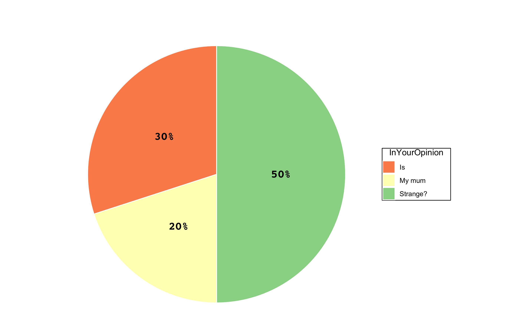
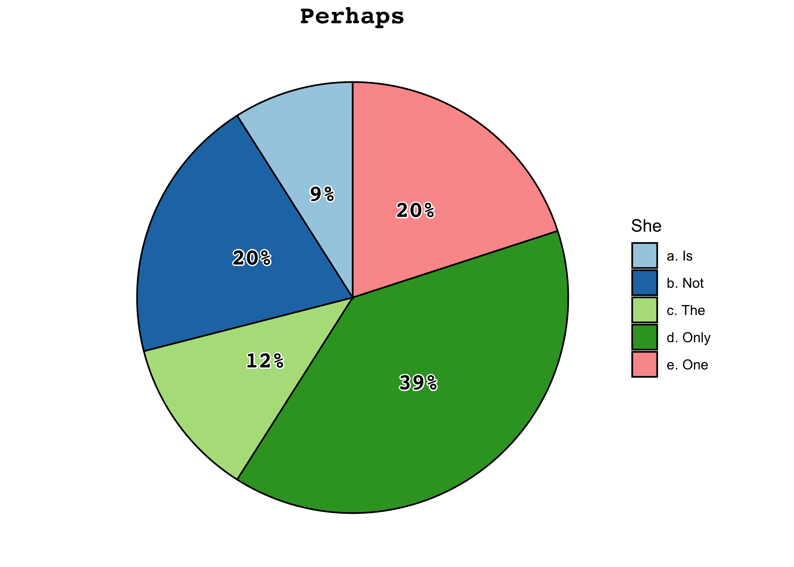
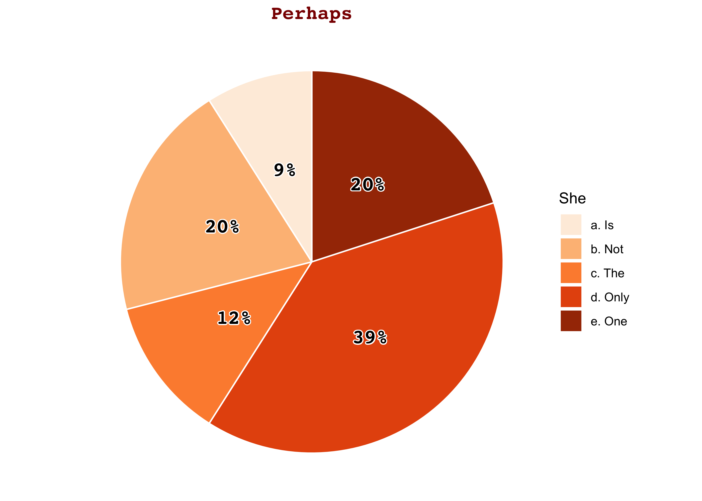
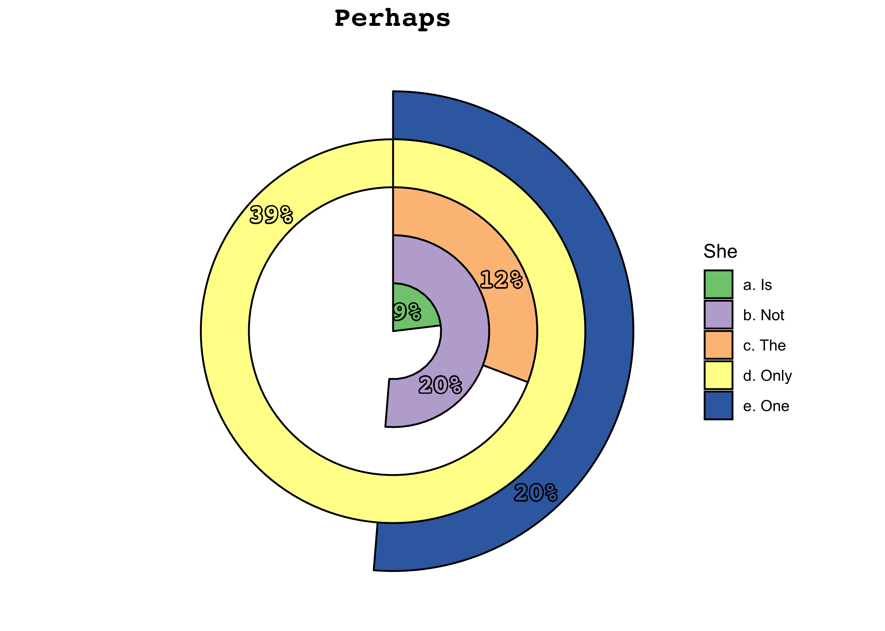
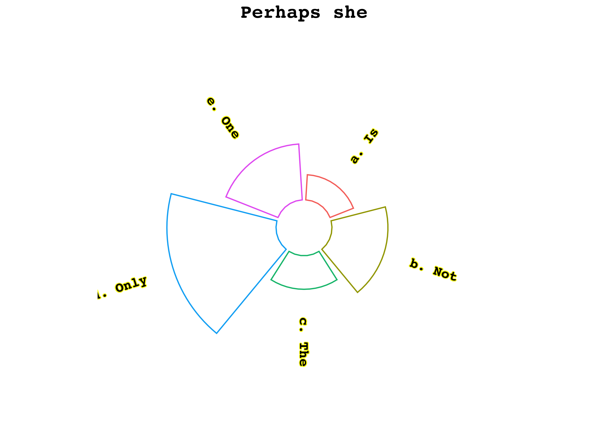
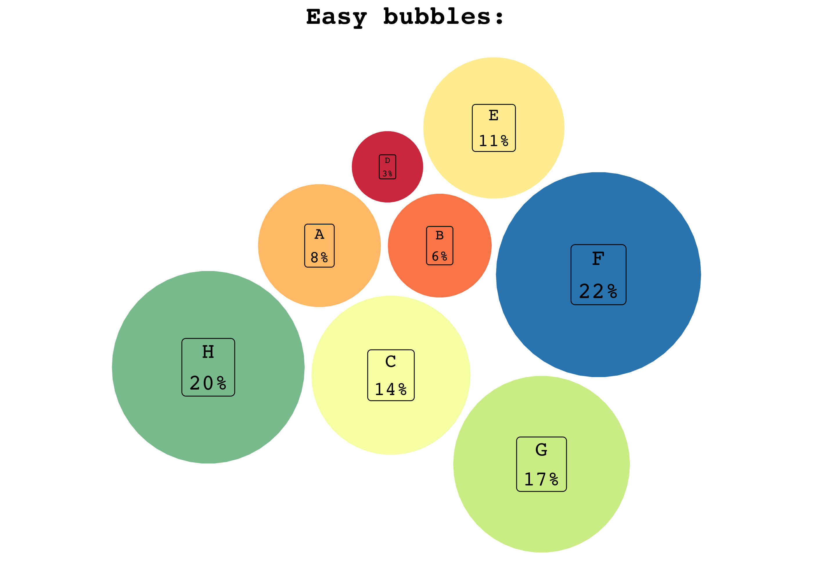
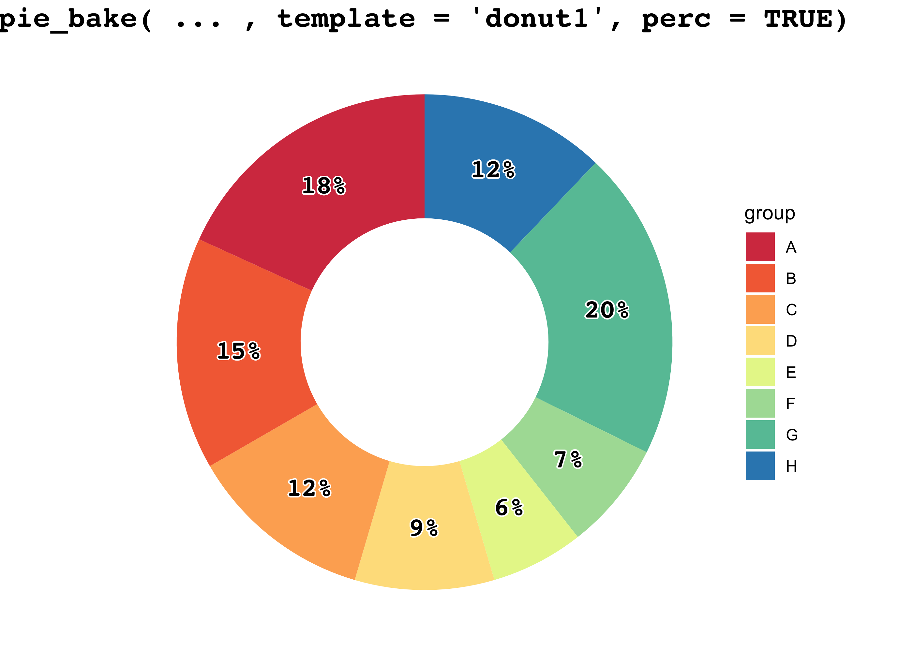
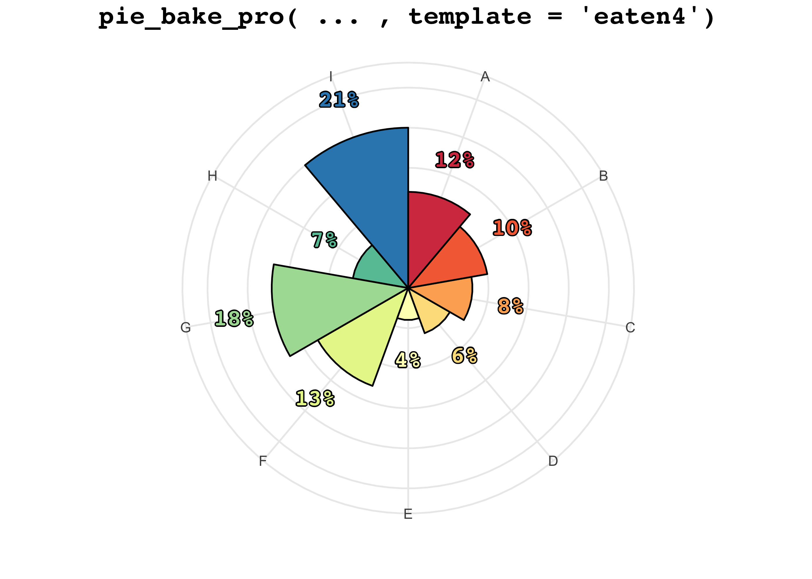

- Add figures to the pie charts, easily create circular packing charts, radar charts and circular barplots: check out what’s new in tastypie
0.1.0here! - Would you like to join the tastypie crew and get a free
tasty_tshirt? Find out the details here.
You only need to type “why pie charts are bad” on Google to find thousands of articles full of (very valid) reasons why this type of chart should not be used.
However, my mother, a high school teacher of Latin and Italian Literature, swears she understands more from something like this:

than from something like this:
| InYourOpinion | Value | Proportion |
|---|---|---|
| My mum | 60 | 0.2 |
| Is | 90 | 0.3 |
| Strange? | 150 | 0.5 |
Now, I love my mum, and I want her to be happy. Maybe there are other people in the world with this particular problem, so, why not help?
Due to the little use because of the already mentioned reasons, making pie (and related) charts in R is not straightforward, so it is necessary to have functions to simplify things.
In this R package there are useful functions for making tasty pies exploiting some ggplot2 features.
Installation
You can install the released version of tastypie from CRAN with:
install.packages("tastypie")Or, you can install the development version from GitHub with:
# install.packages("devtools")
devtools::install_github("PaoloDalena/tastypie")Then, you can attach to your session with:
Usage
tastypie allows the user to easily create many different pie charts based on different templates.
Using pie_bake() you just have to choose a template and if you want the proportions to be displayed in the plot or not (if you want, you can also set a title and a group name):
example <- data.frame(
c("a. Is", "b. Not", "c. The", "d. Only", "e. One"),
c(2.9, 6.9, 4.20, 13.12, 6.66)
)
pie_bake(data = example, template = "basic4", perc = TRUE,
title = "Perhaps", group_name = "She")
pie_bake(data = example, template = "red1", perc = TRUE,
title = "Perhaps", group_name = "She")
Or, if you want something more extravagant (but probably less understandable), choose a template and try pie_bake_pro():
pie_bake_pro(data = example, template = "dart5",
title = "Perhaps", group_name = "She")
pie_bake_pro(data = example, template = "cirbar3", title = "Perhaps she")
Or, if you are interested in a circular packing chart, you can easily do it with the bubble_blow function:
exblow <- data.frame(
LETTERS[1:8],
c(33, 24, 54, 12, 43, 88, 66, 78)
)
bubble_blow(exblow, template = "bub2", perc = "below", title = "Easy bubbles:")
#> Warning: Using `size` aesthetic for lines was deprecated in ggplot2 3.4.0.
#> ℹ Please use `linewidth` instead.
#> ℹ The deprecated feature was likely used in the tastypie package.
#> Please report the issue at <https://github.com/PaoloDalena/tastypie/issues>.
#> This warning is displayed once every 8 hours.
#> Call `lifecycle::last_lifecycle_warnings()` to see where this warning was
#> generated.
Not sure which template to choose? Run pie_discover() to find out a random combination of templates, number of groups and features and get an idea of the many available plots:

Want to display an example of a particular template with particular features? Try pie_templates():
pie_templates("eaten4", n_groups = 9)
Do you want a list of all the available templates? Check the pie_template_list and the pie_template_list_pro vectors!
pie_template_list # to be used with pie_bake()
#> [1] "basic1" "basic2" "basic3" "basic4" "basic5" "bw1"
#> [7] "bw2" "bw3" "bw4" "bw5" "blue1" "blue2"
#> [13] "blue3" "blue4" "blue5" "red1" "red2" "red3"
#> [19] "red4" "red5" "rainbow1" "rainbow2" "rainbow3" "rainbow4"
#> [25] "rainbow5" "donut1" "donut2" "donut3" "donut4" "donut5"
pie_template_list_pro # to be used with pie_bake_pro()
#> [1] "eaten1" "eaten2" "eaten3" "eaten4" "eaten5"
#> [6] "dart1" "dart2" "dart3" "dart4" "dart5"
#> [11] "eye1" "eye2" "eye3" "eye4" "eye5"
#> [16] "watermelon1" "watermelon2" "watermelon3" "watermelon4" "watermelon5"
#> [21] "cirbar1" "cirbar2" "cirbar3" "cirbar4" "cirbar5"
#> [26] "spider1" "spider2" "spider3" "spider4" "spider5"Do you want to see all possible templates displayed? Here you can find what you are looking for.
Do you want to add some images to your tasty pie chart? You can do it easily with pie_addimages()! Check out an example of how to do it here.
Be curious, there are many tasty pies!
Feature request
If you need some more features, please tell me here.

{kind=link}